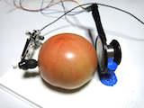
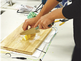

| 2012/4 - | 現在 | 学士 , 立命館大学情報理工学部メディア情報学科, (指導:井尻敬講師，平林晃教授). |
| 2016/4 - | 現在 | 情報処理振興事業協会(IPA),未踏ソフト創造事業(20016年度)採択. |
|  | Acoustic probing to estimate freshness of tomato
APSIPA 2016 |
|  | CogKnife: Food Recognition From Their Cutting Sounds
CEA2016 [project page] |